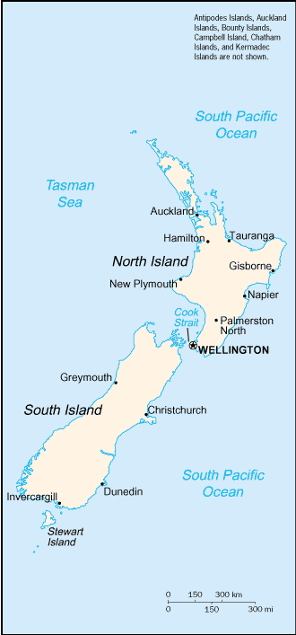

[Voir le carnet de route de la Nouvelle-Zélande]
Itinéraire prévisionnel :
 ChristChurch
ChristChurch
 Mont Cook
Mont Cook
 Wellington
Wellington
 Auckland
Auckland

Superficie : 270 990 km² (la moitié de la France)
Population : 3 80 000 habitants
Capitale : Wellington (340 000 habitants)
Peuples et ethnies : 79,1% d’Européens, 9,7% de Maoris et 3, 8% d’autres Polynésiens
Langues : anglais et maori
Religions : 24% d’anglicans, 28% de protestants autres, 15% de catholiques
Institutions politiques : Monarchie constitutionnelle, membre du Commonwealth
Principales activités : agro-alimentaire (premier producteur de kiwi), bois, papier, laine, textile, produits laitiers, fer et acier
Visa : non
Monnaie : le Dollar néo-zélandais (1€ = 1.8 NZ$ en 2004)
Budget quotidien : 35 à 45 US $/jour.
- Consulat :
7 ter rue Léonard de Vinci, 75116 Paris.
Tél. : 01 45 00 24 11.
Ambasssade de France :
| Adresse | Rural Bank Building, 53ème étage, 34/42 Manners street, PO Box 11343 |
| Ville | Wellington |
| Téléphone | (64 4)384 25 55 |
| Fax | (64 4)384 25 77 |
| URL | http://www.ambafrance-nz.org |
Liste des médecins :
- Généraliste :
Ville : Auckland
Nom : Dr. BARCLAY Simon
Adresse : 102 Great South Road Epsom
Téléphone : 520 50 60
Langues : Anglais et français
Commentaire : -
Ville : Auckland
Nom : Dr MALLOY M.B.
Adresse : 201 Eden Rd Mt Eden
Téléphone : 631 58 63
Langues : Français
Commentaire : -
Ville : Christchurch
Nom : Dr. ROBSON Murrey
Adresse : Straven Medical Rooms 6, Straven road Christchurch
Téléphone : 348 57 49
Langues : Français et anglais
Commentaire : -
Ville : Dunedin
Nom : Dr. BORRIE Peter Alexander
Adresse : 271 Highgate Rselyn
Téléphone : 477 64 71
Langues : Français et anglais
Commentaire : -
Ville : Wellington
Nom : Dr. COOKSON Timothy
Adresse : 189-191 Willis Street Wellington
Téléphone : 384 96 75
Langues : Français et anglais
Commentaire : Médecin approuvé par le consulat français
- Hôpital :
Ville : Auckland
Nom : Auckland hospital
Adresse : -
Téléphone : -
Langues : Anglais
Commentaire : Qualité des soins excellente
Ville : Dunedin
Nom : Dunedin Hospital
Adresse : 141 Frederick St
Téléphone : 474 022
Langues : Anglais
Commentaire : Très bien
Ville : Dunedin
Nom : Mercy Hospital
Adresse : 72 Newington Ave Mrihl
Téléphone : 464 01 07 (03)
Langues :
Commentaire : Toujours très bien
Ville : Wellington
Nom : Wellington Hospital
Adresse : -
Téléphone : 752 679 /833 999
Langues : Anglais
Commentaire : Encore très bien
- Pharmacie :
Ville : -
Nom : -
Adresse : -
Téléphone : -
Langues : -
Commentaire : Aucun problème pour en trouver une très bien. Elles sont toutes très bien approvisionnées.